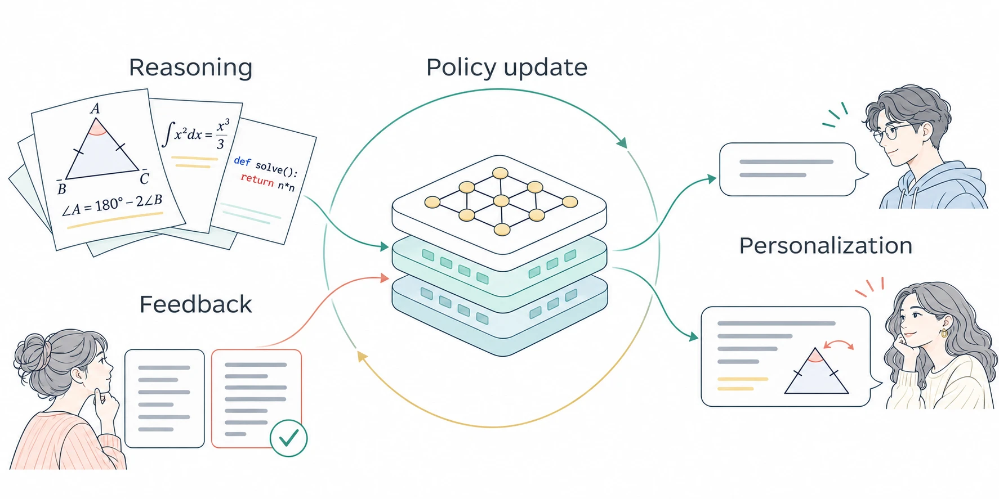
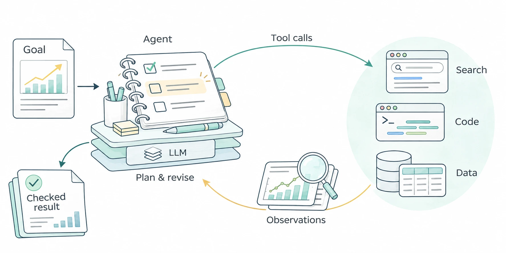
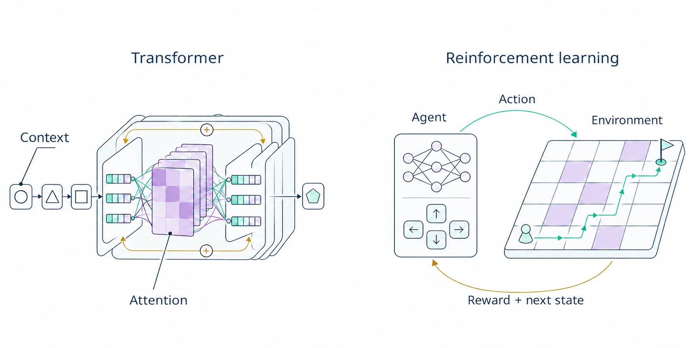
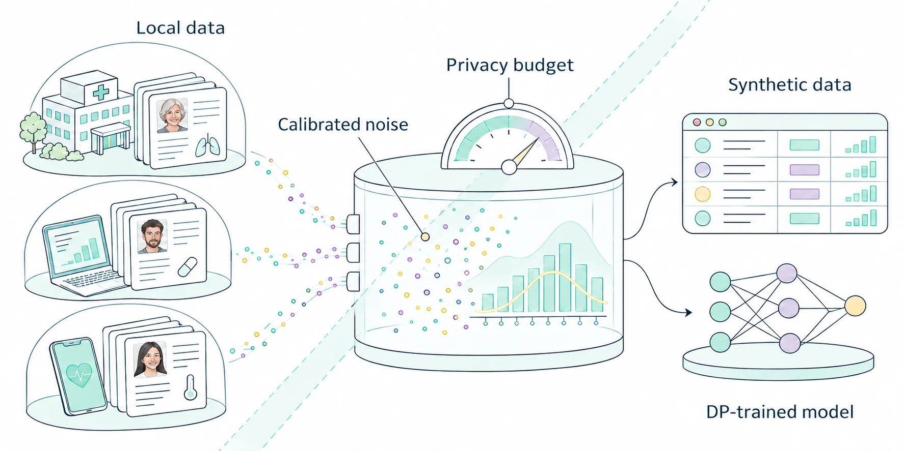
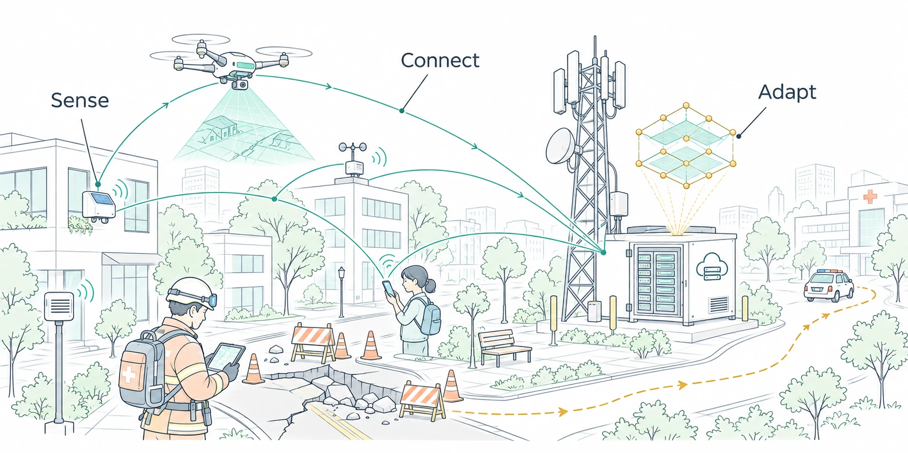

Research Overview
Our research spans LLM post-training and inference, foundations of AI/ML, privacy-preserving machine learning, and AI for wireless networks and emerging applications. We connect theoretical guarantees with algorithms that work under data, computation, communication, and privacy constraints.
LLM post-training for reasoning and alignment
Reinforcement learning from human feedback (RLHF), policy optimization, and personalized alignment.
We study how post-training can improve language-model reasoning and align model behavior with human preferences. Our work covers policy optimization, the statistical foundations of learning from preference feedback, and adaptation to the different needs of individual users.


Recent results
Greedy sampling for RLHF. Under the studied KL-regularized preference-learning objectives, direct empirical estimates yield strong performance guarantees without optimism or pessimism bonuses. Experiments illustrate similar convergence rates, with differences in cumulative regret.
Personalized alignment. Shared low-rank adaptation learns common structure across users’ reward models while retaining individual differences. The method comes with sample-complexity guarantees and is evaluated on real-world preference datasets.
Selected papers
Skill-Coupled Policy Optimization with Calibrated Group-Wise Advantage Estimation
P. Wang, Z. Chu, C. Shi, M. Poloczek, C. Shen and J. Yang. NeurIPS 2026, accepted.Greedy Sampling Is Provably Efficient for RLHF
D. Wu, C. Shi, J. Yang and C. Shen. NeurIPS 2025.A Shared Low-Rank Adaptation Approach to Personalized RLHF
R. Liu, P. Wang, D. Li, C. Shen and J. Yang. AISTATS 2025.
Efficient LLM inference and agentic AI
Prompt and agent harness optimization, evaluation, and cost-aware resource allocation.
We study how to obtain useful behavior from language models within limited evaluation and inference budgets. Our interests include selecting prompts, optimizing the surrounding agent harness, evaluating competing configurations, and allocating resources across quality, cost, and other objectives.


Recent results
Multi-objective prompt selection. A pure-exploration bandit formulation addresses both recovering a Pareto set of prompts and identifying the best prompt that satisfies constraints. The structured-bandit method provides identification-error guarantees in the linear setting.
Evaluation under a fixed budget. TRIPLE connects prompt selection to fixed-budget best-arm identification, allocating a limited evaluation budget to find strong prompts. Experiments also examine efficient example selection for few-shot prompting.
Selected papers
Efficient Multi-objective Prompt Optimization via Pure-exploration Bandits
D. Li, C. Shi, W. Ou, C. Shen and J. Yang. ICLR 2026.Efficient Prompt Optimization Through the Lens of Best Arm Identification
C. Shi, K. Yang, Z. Chen, J. Li, J. Yang and C. Shen. NeurIPS 2024.
Foundations of AI/ML
Transformers and in-context learning; bandits, constrained decision-making, and sample-efficient reinforcement learning.
We seek mathematical explanations for learning and decision-making. We analyze how transformers acquire capabilities, how bandit algorithms allocate limited observations, and how reinforcement learning can balance exploration, constraints, sample efficiency, and computation.


Recent results
Learning from unlabeled context. In a multi-class linear classification setting, a transformer with chain-of-thought prompting can emulate expectation-maximization and use unlabeled inputs to improve in-context prediction. The analysis also establishes convergence under teacher-forcing training.
Understanding training dynamics. For the regular-language tasks studied, joint training of attention and a linear layer follows two phases: attention first separates representations, then the linear layer approaches a max-margin direction. Chain-of-thought enables the parity-check task.
Efficient actor-critic learning. In low-rank Markov decision processes, an optimistic actor-critic method improves sample-complexity guarantees using a policy-evaluation oracle, avoiding more demanding planning oracles under the paper's computational assumptions.
Exploration under constraints. In tabular episodic MDPs, StepMix combines a safe baseline with an optimistic policy to satisfy episode-wise performance constraints with high probability while retaining near-optimal regret order.
Selected papers
Unlabeled Data Can Provably Enhance In-Context Learning of Transformers
R. Liu and J. Yang. NeurIPS 2025.How Transformers Learn Regular Language Recognition: A Theoretical Study on Training Dynamics and Implicit Bias
R. Huang, Y. Liang and J. Yang. ICML 2025.Breaking the Computational Barrier: Provably Efficient Actor-Critic for Low-Rank MDPs
R. Huang, D. Li, Y. Liang and J. Yang. ICML 2026.Near-optimal Conservative Exploration in Reinforcement Learning under Episode-wise Constraints
D. Li*, R. Huang*, C. Shen and J. Yang. ICML 2023. (* Equal contribution)
Privacy-preserving machine learning
Differential privacy, federated and decentralized learning, and privacy-preserving data synthesis.
We study differential privacy alongside federated and decentralized learning, with an emphasis on protecting sensitive information while maintaining useful model performance. Our work includes private preference data for LLM alignment, synthetic prompts, and tabular data synthesis across participants with heterogeneous data.


Recent results
Private preference data for alignment. DPPrefSyn learns differentially private reward models from sensitive human feedback, then uses public prompts to generate synthetic preference data. Its design captures heterogeneous preferences while supporting downstream alignment.
Private synthesis across heterogeneous participants. HeteroFedSyn selects and estimates informative marginal statistics in a federated setting. In the reported experiments, its synthetic data achieves utility comparable to centralized synthesis across query, fidelity, and machine-learning evaluations.
Selected papers
Differentially Private Preference Data Synthesis for Large Language Model Alignment
F. Gao and J. Yang. ICML 2026.HeteroFedSyn: Differentially Private Tabular Data Synthesis for Heterogeneous Federated Settings
X. Li, F. Gao, X. Wei, T. Wang, C. Shen and J. Yang. SIGMOD 2026.Data-adaptive Differentially Private Prompt Synthesis for In-Context Learning
F. Gao, R. Zhou, T. Wang, C. Shen and J. Yang. ICLR 2025.
AI for wireless networks and emerging applications
Machine learning for wireless communications and networking, edge intelligence, and data-driven applications.
We bring learning algorithms to wireless receivers and distributed edge systems, and use communication-system structure to make learning more efficient. We study how to divide computation, exploit context, and adapt models to resource-constrained settings.


Recent results
Lighter client-side training. HERON-SFL combines gradient-free client updates with first-order server training. In the reported ResNet and language-model experiments, it matches benchmark accuracy while reducing client peak memory by up to 64% and per-step computation by up to 33%.
Reasoning with shallow receivers. CHOOSE adds latent chain-of-thought steps to one- or two-layer transformers for wireless symbol detection. Experiments show detection performance comparable to deeper models with fewer parameters.
Selected papers
Lean Clients, Full Accuracy: Hybrid Zeroth- and First-Order Split Federated Learning
Z. Kou, Z. Chen, J. Yang and C. Shen. IEEE Journal on Selected Areas in Communications, accepted.Chain-of-Thought Enhanced Shallow Transformers for Wireless Symbol Detection
L. Fan, P. Wang, J. Yang and C. Shen. IEEE GLOBECOM 2025.